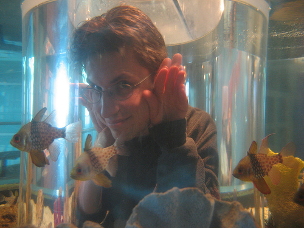

Chris Lesniewski-Laas <ctl>
{kind=link}
I'm a graduate student in the Parallel and Distributed Operating Systems group in the Computer Science and Artificial Intelligence Laboratory at MIT. My advisor is Frans Kaashoek.
I am interested in scaling and security for distributed Internet systems and networks.
My goal is to develop fully decentralized systems which can potentially scale to billions of participants. The challenge is maintaining the integrity and reliability of the system without any centralized authorities and despite concerted attacks by malicious participants with arbitrary numbers of pseudonyms.
Research Projects
- Whānau: a scalable distributed hash table secure against powerful denial of service attacks, including the Sybil attack.
- Eyo: a storage system providing a consistent view of a user's data (such as photos, music, and email) across her personal devices.
- UIA: naming and routing for personal mobile devices, such as laptops, phones, cameras, and media players.
- Alpaca: a logic-based proof-carrying authorization framework which enables extensible cryptographic protocols.
- Barnraising: a P2P content distribution network with untrusted caches.
Publications: PDF, CrossTeX, BibTeX
Updated March 2010.
-
Whānau: A Sybil-proof Distributed Hash Table.
Chris Lesniewski-Laas and M. Frans Kaashoek.
In Proceedings of the Symposium on Networked System Design and Implementation, San Jose, California, April 2010.
Abstract PDF PS. -
Device Transparency: a new model for mobile storage.
Jacob Strauss, Chris Lesniewski-Laas, Justin Mazzola Paluska, Bryan Ford, Robert Morris, and M. Frans Kaashoek.
In Proceedings of the SOSP Workshop on Hot Topics in Storage and File Systems (HotStorage), Big Sky, Montana, October 2009.
Abstract PDF PS. -
Whānaungatanga: Sybil-proof routing with social networks.
Chris Lesniewski-Laas and M. Frans Kaashoek.
MIT, Technical Report MIT-CSAIL-TR-2009-045, September 2009.
Abstract PDF PS. -
A Sybil-proof one-hop DHT.
Chris Lesniewski-Laas.
In Proceedings of the Workshop on Social Network Systems, Glasgow, Scotland, April 2008.
Abstract PDF PS. -
Alpaca: extensible authorization for distributed services.
Chris Lesniewski-Laas, Bryan Ford, Jacob Strauss, Robert Morris, and M. Frans Kaashoek.
In Proceedings of the ACM Conference on Computer and Communications Security, ACM, Alexandria, Virginia, October 2007.
Abstract PDF PS. -
Persistent personal names for globally connected mobile devices.
Bryan Ford, Jacob Strauss, Chris Lesniewski-Laas, Sean Rhea, M. Frans Kaashoek, and Robert Morris.
In Proceedings of the Symposium on Operating System Design and Implementation, Seattle, Washington, November 2006.
Abstract HTML PDF PS. -
User-relative names for globally connected personal devices.
Bryan Ford, Jacob Strauss, Chris Lesniewski-Laas, Sean Rhea, M. Frans Kaashoek, and Robert Morris.
In Proceedings of the International Workshop on Peer-to-Peer Systems, Santa Barbara, California, February 2006.
Abstract PDF PS. -
Sybil-resistant DHT routing.
George Danezis, Chris Lesniewski-Laas, M. Frans Kaashoek, and Ross Anderson.
In Proceedings of the European Symposium On Research In Computer Security, Milan, Italy, September 2005.
Abstract PDF PS. -
SSL splitting: securely serving data from untrusted caches.
Chris Lesniewski-Laas and M. Frans Kaashoek.
In Computer Networks, 48(5):763–779, Elsevier, August 2005.
Abstract HTML PDF PS. -
SSL splitting: securely serving data from untrusted caches.
Chris Lesniewski-Laas and M. Frans Kaashoek.
In Proceedings of the USENIX Security Symposium, Washington, D.C. August 2003.
Abstract HTML PDF PS. -
SSL splitting and Barnraising: cooperative caching with authenticity guarantees.
Chris Lesniewski-Laas.
Master’s Thesis, Massachusetts Institute of Technology, February 2003.
Abstract PDF PS.
